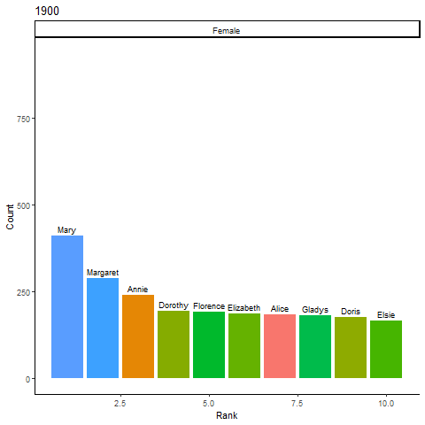
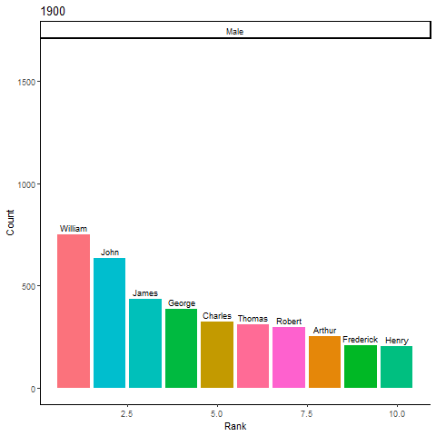

vignettes/popularity_over_time.Rmd
popularity_over_time.RmdOne popular way to understand baby names is to look at the most popular names in any given year.
Here let’s look at the Top 10 names for each year in our data set.
Start by reading in the data and creating a rank for each name by Sex and Year.
library(nzbabynames)
library(dplyr)
#>
#> Attaching package: 'dplyr'
#> The following objects are masked from 'package:stats':
#>
#> filter, lag
#> The following objects are masked from 'package:base':
#>
#> intersect, setdiff, setequal, union
names <- nzbabynames
names <- names %>%
group_by(Sex, Year) %>%
arrange(-Count) %>%
mutate(Rank = seq_along(Count))
names
#> # A tibble: 66,653 x 5
#> # Groups: Sex, Year [236]
#> Year Sex Name Count Rank
#> <int> <chr> <chr> <int> <int>
#> 1 1947 Male John 1628 1
#> 2 1948 Male John 1575 1
#> 3 1946 Male John 1561 1
#> 4 1963 Male David 1513 1
#> 5 1949 Male John 1504 1
#> 6 1958 Male Peter 1484 1
#> 7 1962 Male David 1478 1
#> 8 1956 Male Peter 1451 1
#> 9 1957 Male Peter 1431 1
#> 10 1950 Male John 1403 1
#> # ... with 66,643 more rowsNow let’s filter the data set so we only have names in the Top 10 in any given year
names_top <- names %>%
filter(Rank <= 10)
tail(names_top)
#> # A tibble: 6 x 5
#> # Groups: Sex, Year [5]
#> Year Sex Name Count Rank
#> <int> <chr> <chr> <int> <int>
#> 1 1934 Female Jean 175 10
#> 2 1903 Female Elizabeth 173 10
#> 3 1901 Female Doris 172 9
#> 4 1919 Female Eileen 166 10
#> 5 1900 Female Elsie 166 10
#> 6 1901 Female Florence 165 10We can find the most popular names in a given year
names_top %>%
filter(Year == 1985, Rank == 1)
#> # A tibble: 2 x 5
#> # Groups: Sex, Year [2]
#> Year Sex Name Count Rank
#> <int> <chr> <chr> <int> <int>
#> 1 1985 Male Daniel 755 1
#> 2 1985 Female Sarah 657 1I could also plot names over time. Here I’ll use ggplot2 and gganimate to plot male and female names separately so it’s easier to read.
library(ggplot2)
library(gganimate)
names_top_female <- names_top %>%
filter(Sex == "Female")
time <- ggplot(names_top_female, aes(x = Rank, y = Count, fill = Name)) +
geom_col() +
facet_wrap("Sex") +
geom_text(aes(label = Name), vjust = -0.5, size = 3) +
theme_classic() +
theme(legend.position="none") +
labs(title="{current_frame}") +
transition_manual(Year)
animate(time, duration=120)
library(ggplot2)
library(gganimate)
names_top_male <- names_top %>%
filter(Sex == "Male")
time <- ggplot(names_top_male, aes(x = Rank, y = Count, fill = Name)) +
geom_col() +
facet_wrap("Sex") +
geom_text(aes(label = Name), vjust = -0.5, size = 3) +
theme_classic() +
theme(legend.position="none") +
labs(title="{current_frame}") +
transition_manual(Year)
animate(time, duration=120)